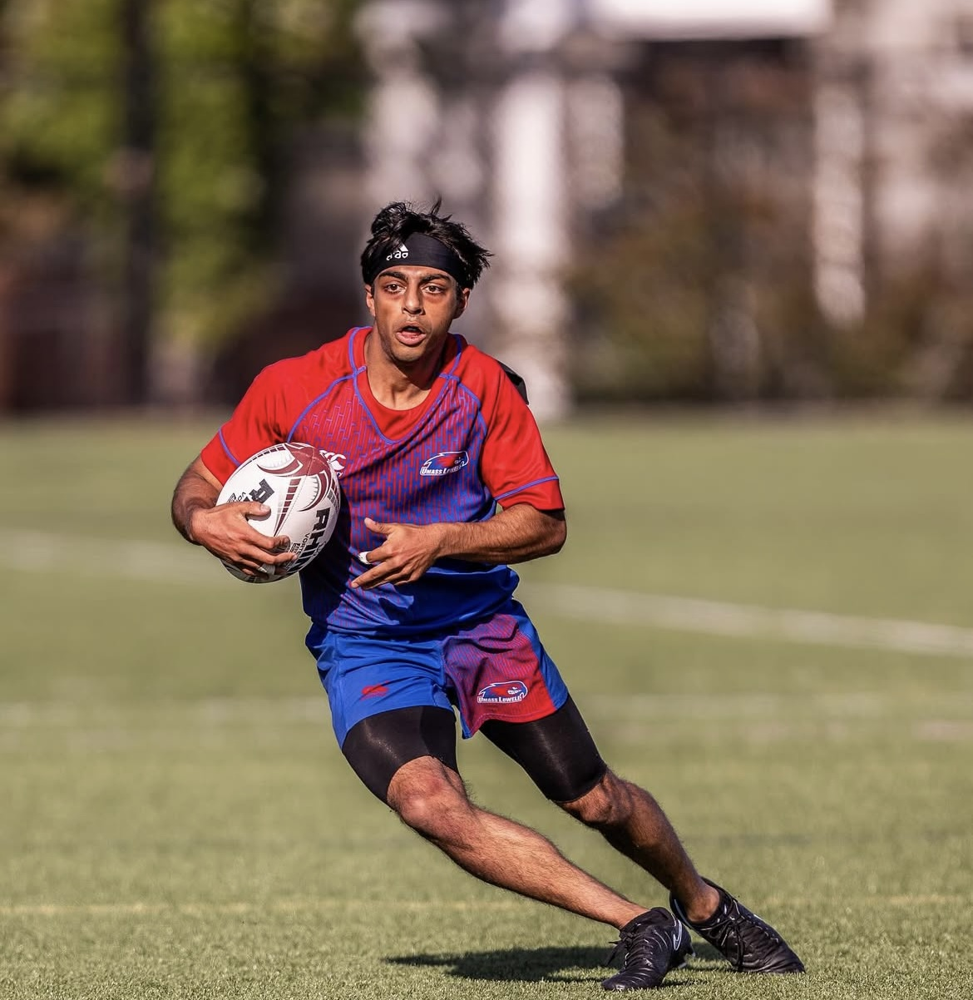
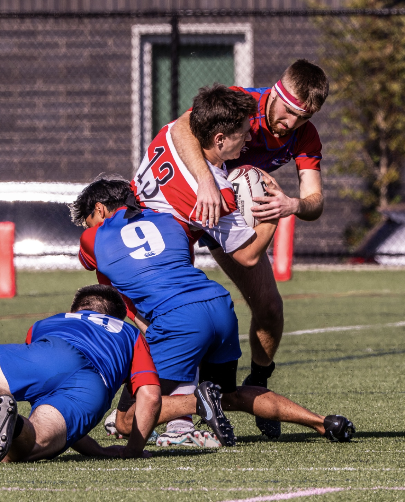

UMass Lowell Men's Rugby
Captain.
Captain.
On and off
the pitch.
Three semesters leading a competitive collegiate rugby program — managing operations, finances, and the culture of a team that wins together.

3
Semesters as Captain
2-in-1
Captain & Treasurer
2024
Year Appointed

Role details
Leadership
Three semesters, one standard
- Appointed Captain for three consecutive semesters, setting expectations on conduct, training intensity, and team culture.
- Served as the primary point of contact between coaching staff, players, and university administration.
- Led pre-match preparation, in-game strategy calls, and post-game debrief sessions.
Operations & Logistics
Running the program
- Coordinated all team logistics — travel scheduling, facility bookings, equipment inventory, and match-day operations.
- Managed communication across a roster of 20+ student-athletes, ensuring consistent information flow and accountability.
Finance & Sponsorship
Treasurer — keeping the lights on
- Managed the team's operating budget: dues collection, expense tracking, and allocation across travel, kit, and match fees.
- Led sponsor outreach efforts to expand the program's external funding base and reduce reliance on student-activity fees.
Why it matters
The discipline that transfers
Captaining a rugby team and founding a financial LLC require the same core skills: the ability to set a standard, hold people to it, manage limited resources, and perform under pressure. Rugby is where I built the muscle. Everything else is where I've applied it.